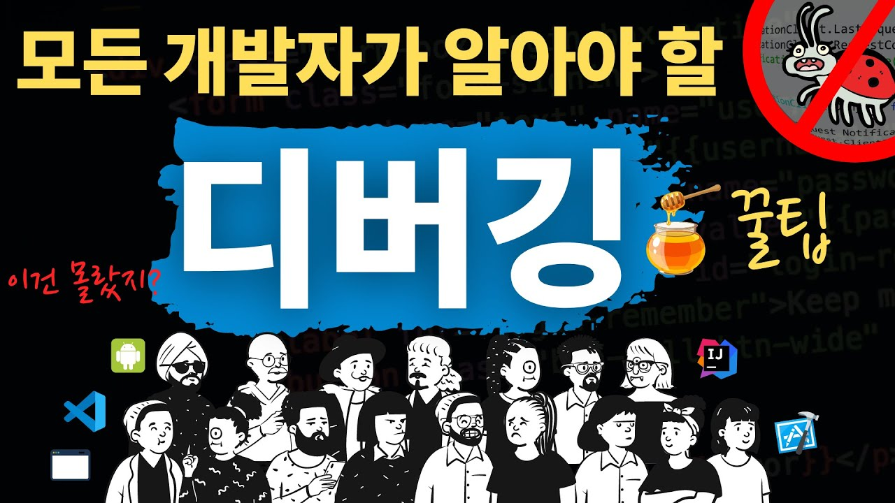

-
 웹사이트 따라만들기, 반응형 헤더편|프론트엔드 개발자 입문편:HTML, CSS, Javascript 드림코딩 by 앨리 조회수 11만회 1년 전
웹사이트 따라만들기, 반응형 헤더편|프론트엔드 개발자 입문편:HTML, CSS, Javascript 드림코딩 by 앨리 조회수 11만회 1년 전 -
HTML 기초, React 할때 꼭 필요한 팁!쉽다고 무시하면 안돼요 | 프론트엔드 개발자 입문편:HTML, CSS, Javascript 드림코딩 by 앨리 조회수 7.5만회 1년 전
-
코딩의 시작과 끝, 디버깅 | 실력있는 개발자의 필수 무기 드림코딩 by 앨리 조회수 4.6만회 4주 전